Unit 5 Classification and Regression Trees (CART)
5.1 Introduction to trees - Judge, Jury, and Classifier
## 'data.frame': 566 obs. of 9 variables:
## $ Docket : Factor w/ 566 levels "00-1011","00-1045",..: 63 69 70 145 97 181 242 289 334 436 ...
## $ Term : int 1994 1994 1994 1994 1995 1995 1996 1997 1997 1999 ...
## $ Circuit : Factor w/ 13 levels "10th","11th",..: 4 11 7 3 9 11 13 11 12 2 ...
## $ Issue : Factor w/ 11 levels "Attorneys","CivilRights",..: 5 5 5 5 9 5 5 5 5 3 ...
## $ Petitioner: Factor w/ 12 levels "AMERICAN.INDIAN",..: 2 2 2 2 2 2 2 2 2 2 ...
## $ Respondent: Factor w/ 12 levels "AMERICAN.INDIAN",..: 2 2 2 2 2 2 2 2 2 2 ...
## $ LowerCourt: Factor w/ 2 levels "conser","liberal": 2 2 2 1 1 1 1 1 1 1 ...
## $ Unconst : int 0 0 0 0 0 1 0 1 0 0 ...
## $ Reverse : int 1 1 1 1 1 0 1 1 1 1 ...
...#Split data into Training and Testing data set
library(caTools)
set.seed(3000)
spl <- sample.split(stevens$Reverse, SplitRatio = 0.7)
Train <- subset(stevens, spl == TRUE)
Test <- subset(stevens, spl == FALSE)
library(rpart)
library(rpart.plot)
#Build classification Tree
stevensTree <- rpart(Reverse~ Circuit+ Issue + Petitioner + Respondent + LowerCourt + Unconst, data = Train, method = "class", minbucket=25)
#Plotting rpart trees
prp(stevensTree)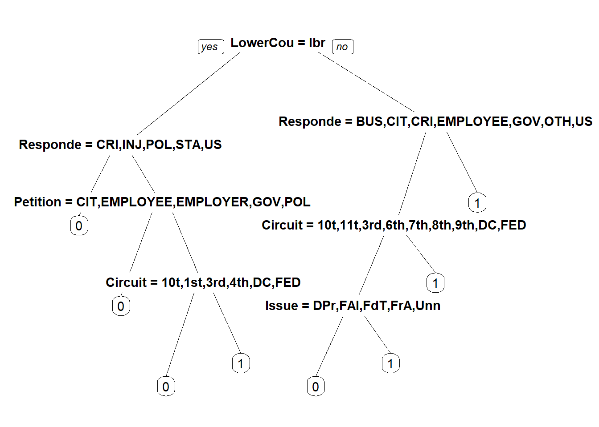
#Predict with tree
predictCART <- predict(stevensTree, newdata = Test, type = "class")
table(Test$Reverse, predictCART) #Confusion matrix## predictCART
## 0 1
## 0 41 36
## 1 22 71#Generate ROC Curve
library(ROCR) #load ROCR library
#Probability Prediction
PredictROC <- predict(stevensTree, newdata=Test) #ROC prediction
pred<- prediction(PredictROC[,2], Test$Reverse) #Use second column as we are trying to predict Reverse = 1.
perf <- performance(pred, "tpr","fpr") # performance Object to be plotted
plot(perf) #Plot ROC Curve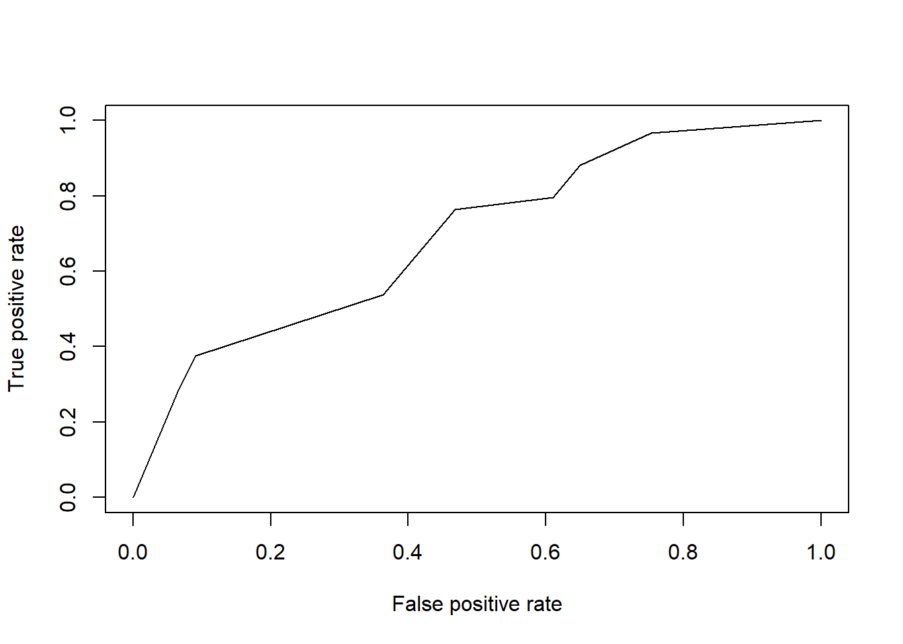
## [1] 0.69271055.1.1 Random Forests
Designed to improve prediction accuracy of CART.
Works by building a large number of CART trees ans prediction is made by each tree voting on outcome
library(randomForest)
#For classification problems, make sure dependent variable is a factor
Train$Reverse <- as.factor(Train$Reverse)
Test$Reverse <- as.factor(Test$Reverse)
#create random forests
StevensForest <- randomForest(Reverse~ Circuit+ Issue + Petitioner + Respondent + LowerCourt + Unconst, data = Train, nodesize=25, ntree=200)
PredictForest <- predict(StevensForest, newdata = Test)# prediction using random forest
table(Test$Reverse, PredictForest) # confusion Matrix## PredictForest
## 0 1
## 0 43 34
## 1 16 775.1.2 Cross validation
Selecting minbucket should not be selected by best accuracy as it does not translate well to new data prediction accuracy
5.1.2.1 K-fold cross validation
Split training set into k pieces/folds
library(caret)
library(e1071)
numFolds <- trainControl(method="cv", number=10) # cv = croos validation; numer = number of folds(buckets)
cpGrid <- expand.grid(.cp=seq(0.01,0.5,0.01))#cp paramaeters to teast as numbers from 0.01 to 0.5, in increments of 0.01.
train(Reverse~ Circuit+ Issue + Petitioner + Respondent + LowerCourt + Unconst, data = Train, method="rpart", trControl=numFolds, tuneGrid = cpGrid)## CART
##
## 396 samples
## 6 predictor
## 2 classes: '0', '1'
##
## No pre-processing
## Resampling: Cross-Validated (10 fold)
## Summary of sample sizes: 356, 356, 357, 357, 356, 356, ...
## Resampling results across tuning parameters:
...#New CART model with new cp value instead on minbucket
StevensTreeCV <- rpart(Reverse ~ Circuit + Issue + Petitioner + Respondent + LowerCourt + Unconst, data = Train, method = "class", cp="0.19")
PredictCV <- predict(StevensTreeCV, newdata= Test, type="class")
table(Test$Reverse, PredictCV) #Confusion Matrix shows increased accuracy to 0.7235294## PredictCV
## 0 1
## 0 59 18
## 1 29 64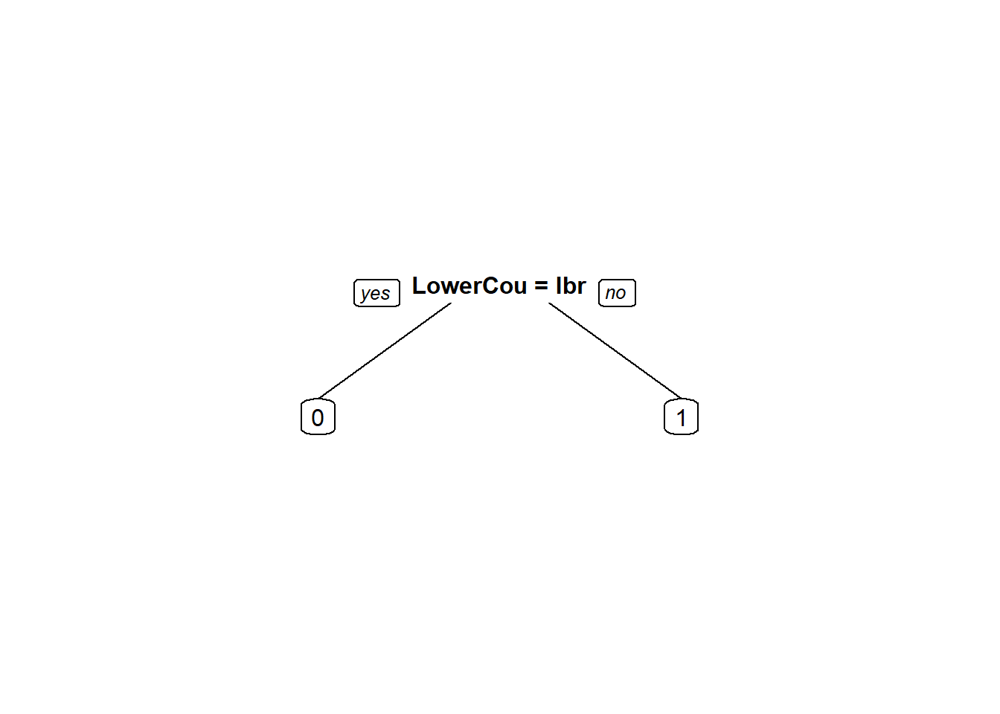
5.2 The D2Hawkeye Story
Predict cost bucket patient fell into in 2009 using a CART model
## 'data.frame': 458005 obs. of 16 variables:
## $ age : int 85 59 67 52 67 68 75 70 67 67 ...
## $ alzheimers : int 0 0 0 0 0 0 0 0 0 0 ...
## $ arthritis : int 0 0 0 0 0 0 0 0 0 0 ...
## $ cancer : int 0 0 0 0 0 0 0 0 0 0 ...
## $ copd : int 0 0 0 0 0 0 0 0 0 0 ...
## $ depression : int 0 0 0 0 0 0 0 0 0 0 ...
## $ diabetes : int 0 0 0 0 0 0 0 0 0 0 ...
## $ heart.failure : int 0 0 0 0 0 0 0 0 0 0 ...
## $ ihd : int 0 0 0 0 0 0 0 0 0 0 ...
...##
## 1 2 3 4 5
## 0.671267781 0.190170413 0.089466272 0.043324855 0.005770679#Split data into training and testing sets
library(caTools) # helps in seed setting for splitting data randomly while maintaining ratio of specified variable
# Put 60% of data in training set
set.seed(88)
spl <- sample.split(Claims$bucket2009, SplitRatio = 0.6)
ClaimsTrain <- subset(Claims, spl = TRUE)
ClaimsTest <- subset(Claims, spl == FALSE)5.2.1 Baseline method and Penalty Matrix
Baseline method will perdict that cost bucket for a patient in 2009 will be the same as it was in 2008
#Classification matrix
ClassificationMatrix <- table(ClaimsTest$bucket2009, ClaimsTest$bucket2008) #Outcome = bucket2009, prediction = bucket2008
ClassificationMatrix##
## 1 2 3 4 5
## 1 110138 7787 3427 1452 174
## 2 16000 10721 4629 2931 559
## 3 7006 4629 2774 1621 360
## 4 2688 1943 1415 1539 352
## 5 293 191 160 309 104## [1] 0.6838135PenaltyMatrix <- matrix(c(0,1,2,3,4,2,0,1,2,3,4,2,0,1,2,6,4,2,0,1,8,6,4,2,0),byrow = T, nrow=5)
PenaltyMatrix## [,1] [,2] [,3] [,4] [,5]
## [1,] 0 1 2 3 4
## [2,] 2 0 1 2 3
## [3,] 4 2 0 1 2
## [4,] 6 4 2 0 1
## [5,] 8 6 4 2 0#penalty Error = sum(Penalty matrix multiplied by classification matrix)/number of observations
sum(PenaltyMatrix*ClassificationMatrix)/nrow(ClaimsTest)## [1] 0.7386055Now, we’ll create a CART model to improve the penalty error and accuracy
library(rpart)
library(rpart.plot)
#cp value was selected from cross validation. Skipped due to time
ClaimsTree <- rpart(bucket2009 ~ age + arthritis + alzheimers + cancer + copd + depression + diabetes + heart.failure + ihd + kidney + osteoporosis + stroke + bucket2008 + reimbursement2008, data= ClaimsTrain, method = "class", cp=0.00005 )
prp(ClaimsTree) #display tree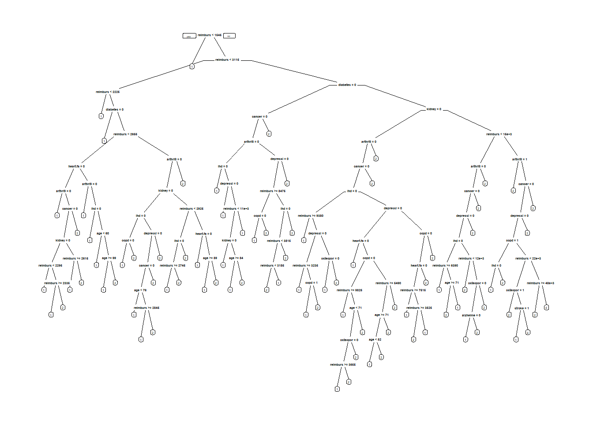
PredictTest <- predict (ClaimsTree, newdata = ClaimsTest, type="class")
ClassificationMatrix <- table(ClaimsTest$bucket2009, PredictTest)
ClassificationMatrix## PredictTest
## 1 2 3 4 5
## 1 114987 7884 0 107 0
## 2 18692 16051 0 97 0
## 3 8188 8120 0 82 0
## 4 3176 4567 0 194 0
## 5 349 671 0 37 0## [1] 0.7126669## [1] 0.7591238CART model predicts 3,4,5 rarely because data has few observations in these classes. Can be rectified by adding penalty matrix to model
ClaimsTree <- rpart(bucket2009 ~ age + arthritis + alzheimers + cancer + copd + depression + diabetes + heart.failure + ihd + kidney + osteoporosis + stroke + bucket2008 + reimbursement2008, data= ClaimsTrain, method = "class", cp=0.00005, parms=list(loss=PenaltyMatrix) )
prp(ClaimsTree)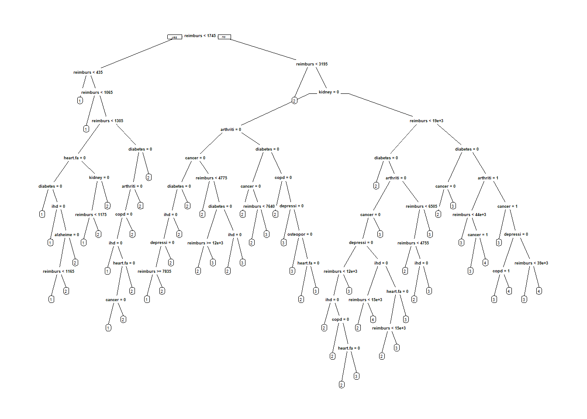
PredictTest <- predict (ClaimsTree, newdata = ClaimsTest, type="class")
ClassificationMatrix <- table(ClaimsTest$bucket2009, PredictTest)
ClassificationMatrix## PredictTest
## 1 2 3 4 5
## 1 93651 26529 2571 227 0
## 2 6913 20324 7049 554 0
## 3 3499 8184 4370 337 0
## 4 1264 3403 2702 568 0
## 5 129 375 411 142 0## [1] 0.6490813## [1] 0.63779875.3 Recitation - Boston Housing Data (Regression Trees)
## 'data.frame': 506 obs. of 16 variables:
## $ TOWN : Factor w/ 92 levels "Arlington","Ashland",..: 54 77 77 46 46 46 69 69 69 69 ...
## $ TRACT : int 2011 2021 2022 2031 2032 2033 2041 2042 2043 2044 ...
## $ LON : num -71 -71 -70.9 -70.9 -70.9 ...
## $ LAT : num 42.3 42.3 42.3 42.3 42.3 ...
## $ MEDV : num 24 21.6 34.7 33.4 36.2 28.7 22.9 22.1 16.5 18.9 ...
## $ CRIM : num 0.00632 0.02731 0.02729 0.03237 0.06905 ...
## $ ZN : num 18 0 0 0 0 0 12.5 12.5 12.5 12.5 ...
## $ INDUS : num 2.31 7.07 7.07 2.18 2.18 2.18 7.87 7.87 7.87 7.87 ...
## $ CHAS : int 0 0 0 0 0 0 0 0 0 0 ...
...plot(boston$LON, boston$LAT)
#See which points lie along the Charles River
points(boston$LON[boston$CHAS ==1], boston$LAT[boston$CHAS == 1], col="blue", pch=19)
points(boston$LON[boston$TRACT ==3531], boston$LAT[boston$TRACT == 3531], col="red", pch=19)
summary(boston$NOX) #air pollution distribution## Min. 1st Qu. Median Mean 3rd Qu. Max.
## 0.3850 0.4490 0.5380 0.5547 0.6240 0.8710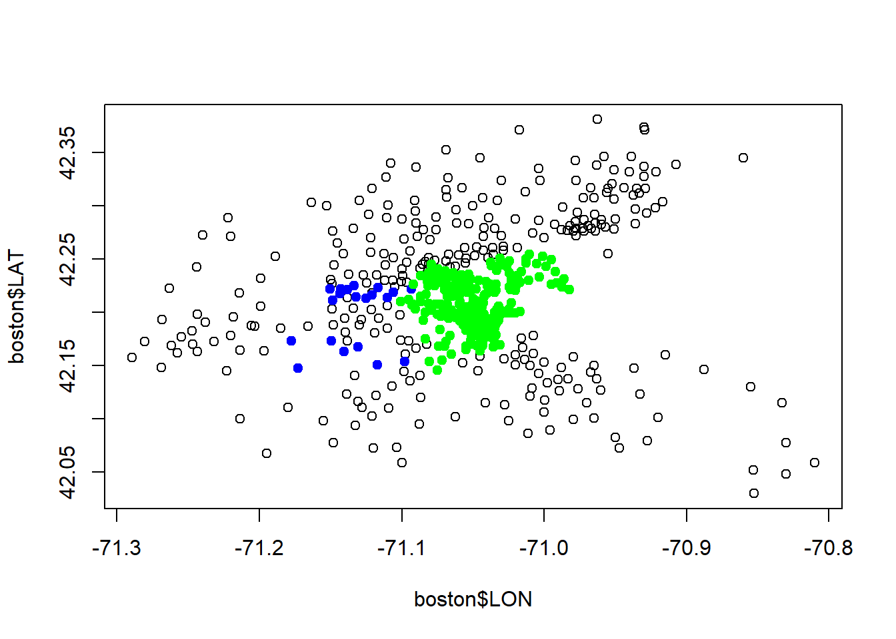
## Min. 1st Qu. Median Mean 3rd Qu. Max.
## 5.00 17.02 21.20 22.53 25.00 50.005.3.1 Geographical Predictions
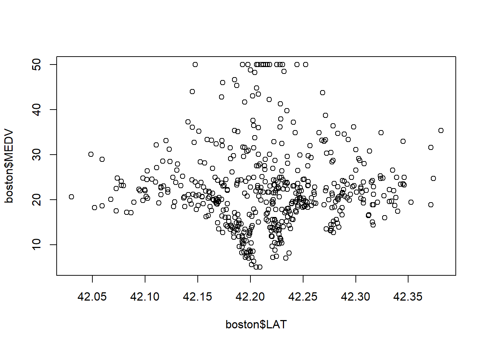
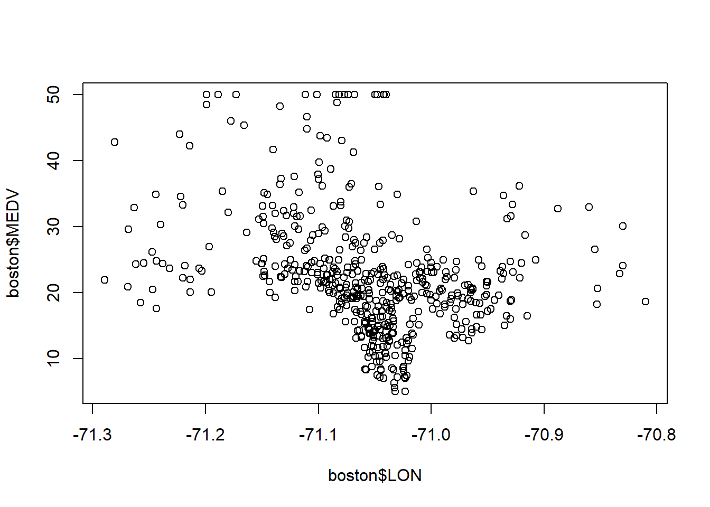
##
## Call:
## lm(formula = MEDV ~ LAT + LON, data = boston)
##
## Residuals:
## Min 1Q Median 3Q Max
## -16.460 -5.590 -1.299 3.695 28.129
##
## Coefficients:
## Estimate Std. Error t value Pr(>|t|)
...#above median cencus tracts
plot(boston$LON, boston$LAT)
points(boston$LON[boston$MEDV >21.2], boston$LAT[boston$MEDV >21.2], col="red", pch=19)
#See performance of linear model
points(boston$LON[latlonlm$fitted.values >21.2], boston$LAT[latlonlm$fitted.values >21.2], col="blue", pch="$")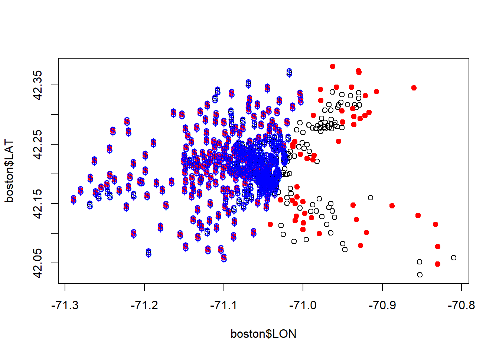
#Regeression Trees
library(rpart)
library(rpart.plot)
latlontree<- rpart(MEDV ~ LAT + LON, data = boston)
prp(latlontree)#Regression trees predcit average of dependent variable(MEDV-median value) in the selected bucket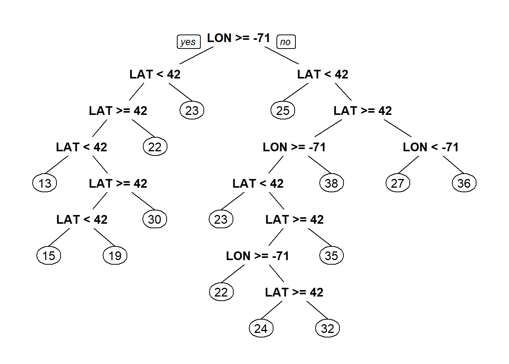
#See performance of Regression tree
plot(boston$LON, boston$LAT)
points(boston$LON[boston$MEDV >21.2], boston$LAT[boston$MEDV >21.2], col="red", pch=19)
fittedvalues <- predict(latlontree)
points(boston$LON[fittedvalues >21.2], boston$LAT[fittedvalues >21.2], col="blue", pch="$")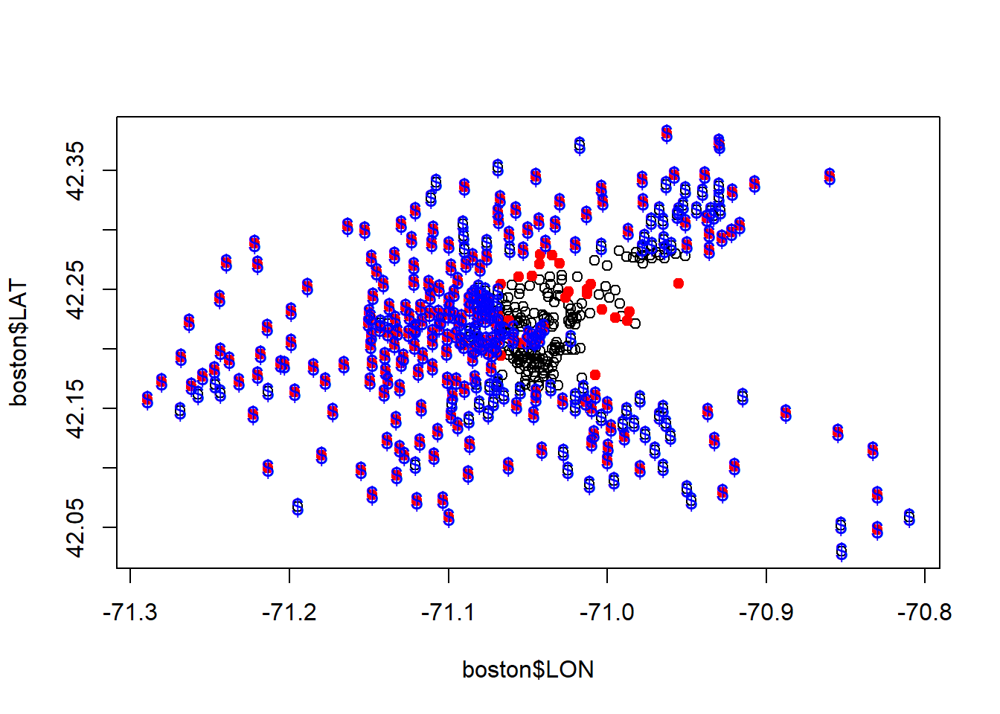
The tree is much better at estimating above median value houses. Athough still complex. We’ll try specifying a simpler tree with a min bucket and observe performance.
latlontree<- rpart(MEDV ~ LAT + LON, data = boston, minbucket=50)
prp(latlontree) #Tree has only 5 splits now 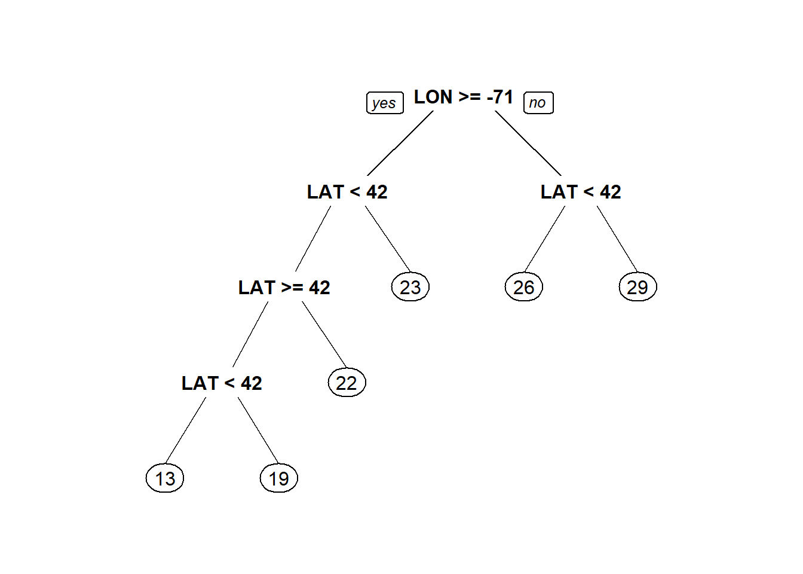
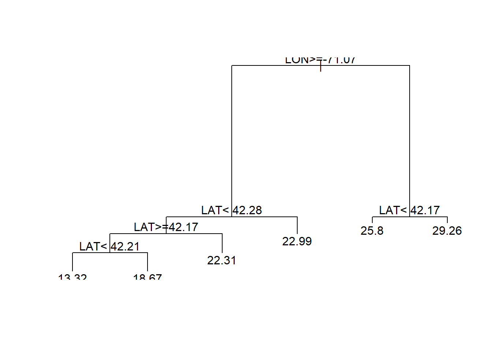
plot(boston$LON, boston$LAT)
abline(v=-71.07)# First split on tree
abline(h=42.21)# Second split on tree to the left
abline(h =42.17)# third left split
points(boston$LON[boston$MEDV >21.2], boston$LAT[boston$MEDV >21.2], col="red", pch=19)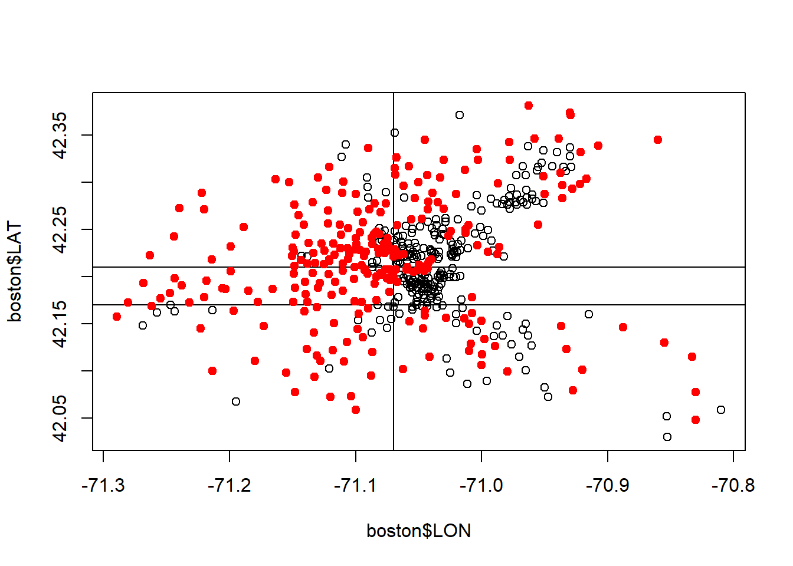
Regression tree has carved out the low value area in the center, that linear Regression in incapable of.
Now we’ll usee more variables than Longitude and Latitude to build a more accurate model
set.seed(123)
split <- sample.split(boston$MEDV, SplitRatio = 0.7)
train <- subset(boston, split==T)
test <- subset(boston, split==F)
linreg <- lm(MEDV ~ . , data = train[!(names(train) %in% c('TOWN','TRACT'))])
summary(linreg)##
## Call:
## lm(formula = MEDV ~ ., data = train[!(names(train) %in% c("TOWN",
## "TRACT"))])
##
## Residuals:
## Min 1Q Median 3Q Max
## -14.511 -2.712 -0.676 1.793 36.883
##
## Coefficients:
...linreg.pred <- predict(linreg, newdata = test)
linreg.sse <- sum((linreg.pred - test$MEDV)^2) #Sum of squared errors
linreg.sse ## [1] 3037.088#Can we Improve sse with regression trees?
tree<- rpart(MEDV ~ . , data = train[!(names(train) %in% c('TOWN','TRACT'))])
prp(tree)## Warning: Bad 'data' field in model 'call' (expected a data.frame or a matrix).
## To silence this warning:
## Call prp with roundint=FALSE,
## or rebuild the rpart model with model=TRUE.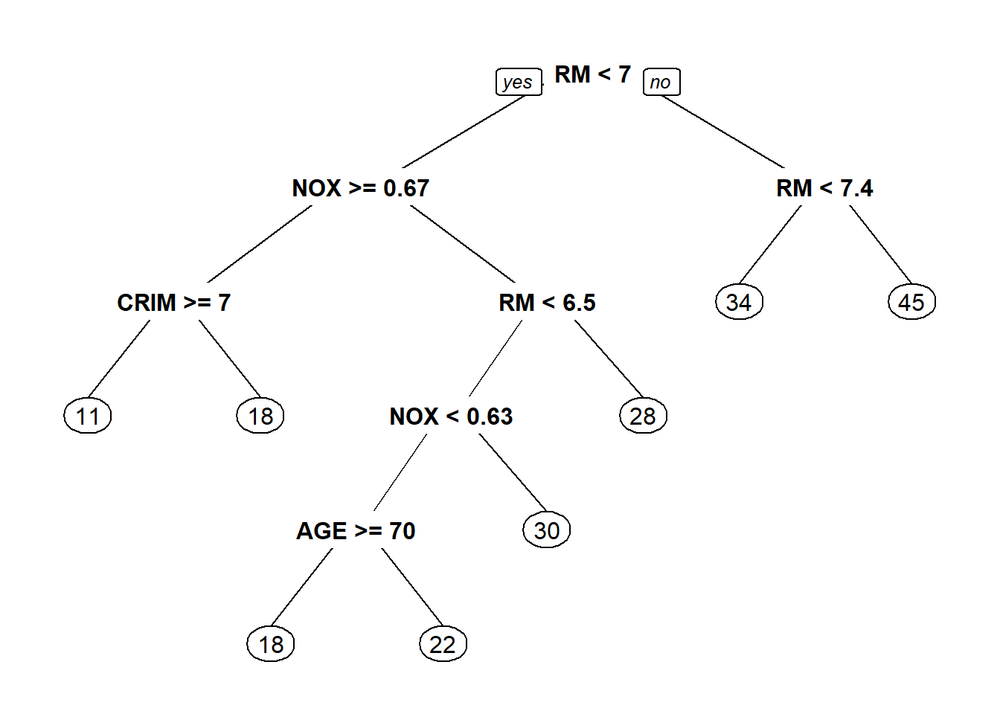
tree.pred <- predict(tree, newdata = test)
tree.sse <- sum((tree.pred -test$MEDV)^2)
tree.sse #increased sse...## [1] 4328.9885.3.2 Cross validation
library(e1071)
library(caret)
tr.control <-trainControl(method = "cv", number=10)
cp.grid <- expand.grid(.cp=(0:10)*0.001) #cp range of values to be tried
tr <- train(MEDV ~ . , data = train[!(names(train) %in% c('TOWN','TRACT'))], method = "rpart", trControl = tr.control, tuneGrid = cp.grid)
tr #cp f 0.001 was the best## CART
##
## 364 samples
## 13 predictor
##
## No pre-processing
## Resampling: Cross-Validated (10 fold)
## Summary of sample sizes: 327, 326, 328, 329, 328, 328, ...
## Resampling results across tuning parameters:
##
...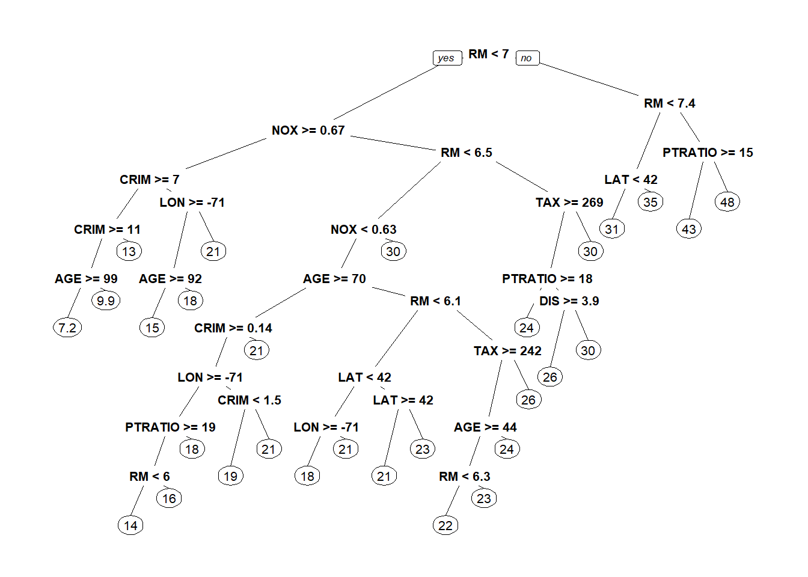
best.tree.pred=predict(best.tree, newdata=test)
#Sum of squared errors
best.tree.sse = sum((best.tree.pred - test$MEDV)^2)
best.tree.sse## [1] 3660.1495.4 Assignment
5.4.1 Part 1 - Understanding why people vote
5.4.1.1 Problem 1 - Exploration and Logistic Regression
#1.1 - What proportion of people in this dataset voted in this election?
gerber <- read.csv("week4/gerber.csv")
summary(gerber) # Answer - 0.3159## sex yob voting hawthorne
## Min. :0.0000 Min. :1900 Min. :0.0000 Min. :0.000
## 1st Qu.:0.0000 1st Qu.:1947 1st Qu.:0.0000 1st Qu.:0.000
## Median :0.0000 Median :1956 Median :0.0000 Median :0.000
## Mean :0.4993 Mean :1956 Mean :0.3159 Mean :0.111
## 3rd Qu.:1.0000 3rd Qu.:1965 3rd Qu.:1.0000 3rd Qu.:0.000
## Max. :1.0000 Max. :1986 Max. :1.0000 Max. :1.000
## civicduty neighbors self control
## Min. :0.0000 Min. :0.000 Min. :0.0000 Min. :0.0000
## 1st Qu.:0.0000 1st Qu.:0.000 1st Qu.:0.0000 1st Qu.:0.0000
...#1.2 - Which of the four "treatment groups" had the largest percentage of people who actually voted (voting = 1)?
table(gerber$voting, gerber$civicduty)##
## 0 1
## 0 209191 26197
## 1 96675 12021## sex yob voting hawthorne civicduty
## Min. :0.0000 Min. :1900 Min. :1 Min. :0.0000 Min. :0.0000
## 1st Qu.:0.0000 1st Qu.:1945 1st Qu.:1 1st Qu.:0.0000 1st Qu.:0.0000
## Median :0.0000 Median :1954 Median :1 Median :0.0000 Median :0.0000
## Mean :0.4898 Mean :1953 Mean :1 Mean :0.1133 Mean :0.1106
## 3rd Qu.:1.0000 3rd Qu.:1962 3rd Qu.:1 3rd Qu.:0.0000 3rd Qu.:0.0000
## Max. :1.0000 Max. :1986 Max. :1 Max. :1.0000 Max. :1.0000
## neighbors self control
## Min. :0.0000 Min. :0.0000 Min. :0.0000
## 1st Qu.:0.0000 1st Qu.:0.0000 1st Qu.:0.0000
...#1.3 - Logistic regression model for voting. Which coeffs are significant
logModel <- glm(voting ~ hawthorne + civicduty +neighbors +self, data = gerber, family = "binomial")
summary(logModel)##
## Call:
## glm(formula = voting ~ hawthorne + civicduty + neighbors + self,
## family = "binomial", data = gerber)
##
## Deviance Residuals:
## Min 1Q Median 3Q Max
## -0.9744 -0.8691 -0.8389 1.4586 1.5590
##
## Coefficients:
...#1.4 - Accuracy of model
votingLogPrediction <- predict(logModel, type = "response")
table(gerber$voting, votingLogPrediction > 0.3)##
## FALSE TRUE
## 0 134513 100875
## 1 56730 51966## [1] 0.5419578#1.6 AUC
library(ROCR)
pred<- prediction(votingLogPrediction, gerber$voting)
perf <- performance(pred, "tpr","fpr") # performance Object to be plotted
plot(perf) #Plot ROC Curve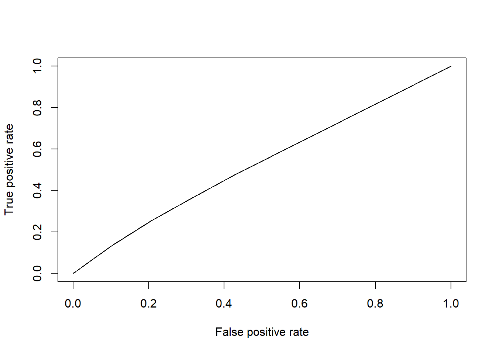
## [1] 0.53084615.4.1.2 Problem 2 - Trees
library(rpart)
library(rpart.plot)
#2.1
CARTmodel = rpart(voting ~ civicduty + hawthorne + self + neighbors, data=gerber)
prp(CARTmodel)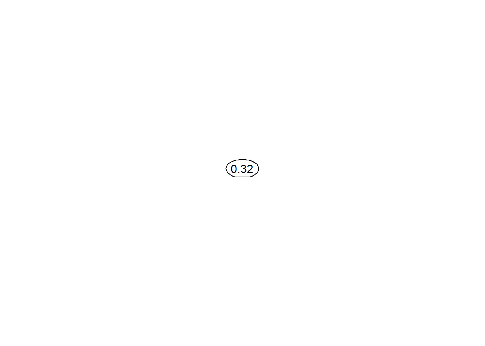
#2.2
CARTmodel2 = rpart(voting ~ civicduty + hawthorne + self + neighbors, data=gerber, cp=0.0)
prp(CARTmodel2)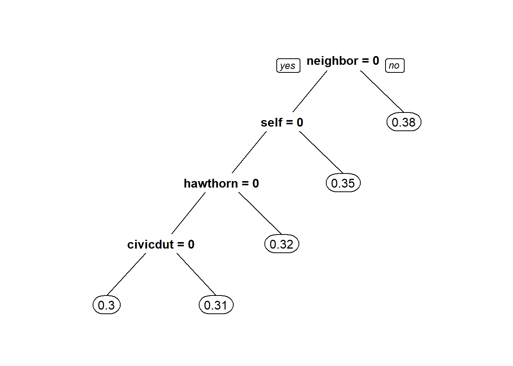
#2.4 - Make a new tree that includes the "sex" variable, again with cp = 0.0
CARTmodel3 = rpart(voting ~ civicduty + hawthorne + self + neighbors + sex, data=gerber, cp=0.0)
prp(CARTmodel3)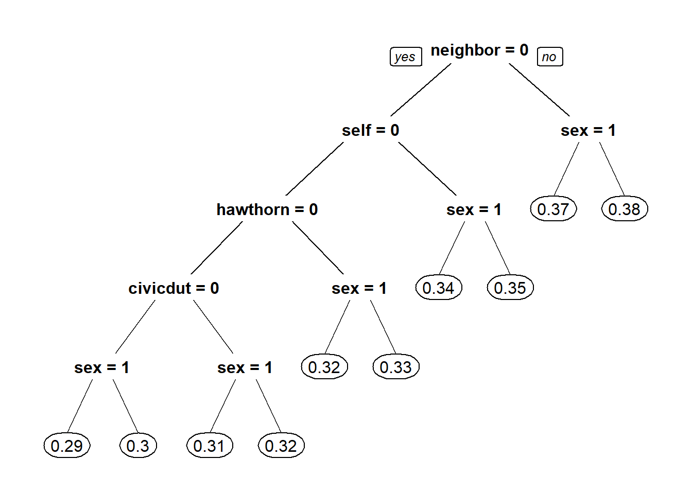
5.4.1.3 Problem 3 - Interaction Terms
#3.1 - Tree with only control varaible and tree with control and sex variable
CARTmodel = rpart(voting ~ control, data=gerber, cp=0.0)
prp(CARTmodel, digits = 6)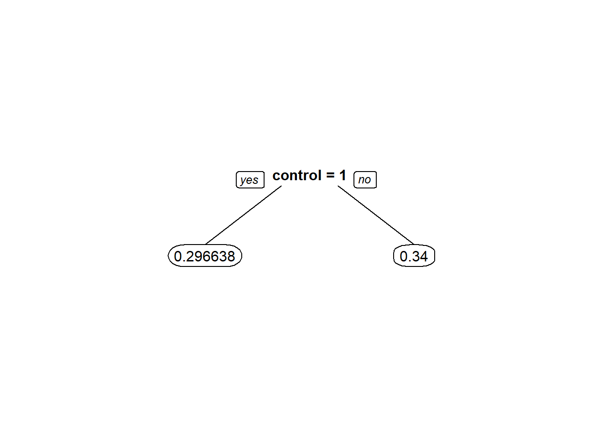
## [1] 0.043362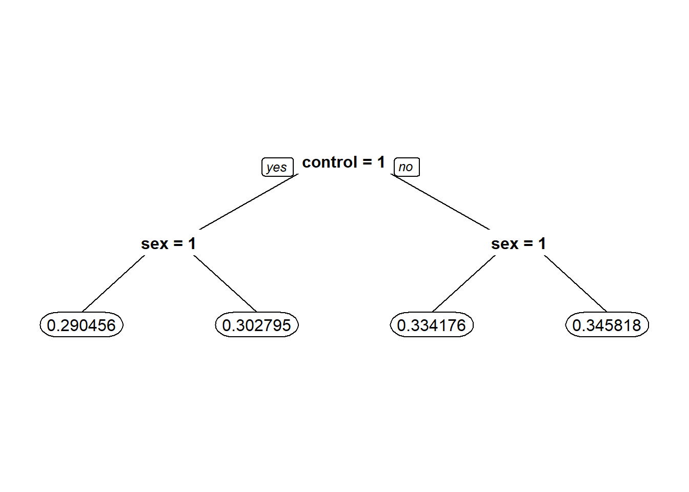
#3.4
Possibilities = data.frame(sex=c(0,0,1,1),control=c(0,1,0,1))
logModelSex <- glm(voting ~ control + sex, data = gerber, family = "binomial")
summary(logModelSex)##
## Call:
## glm(formula = voting ~ control + sex, family = "binomial", data = gerber)
##
## Deviance Residuals:
## Min 1Q Median 3Q Max
## -0.9220 -0.9012 -0.8290 1.4564 1.5717
##
## Coefficients:
## Estimate Std. Error z value Pr(>|z|)
...## 1 2 3 4
## 0.3462559 0.3024455 0.3337375 0.2908065#3.5 - How do you interpret the coefficient for the new variable in isolation? That is, how does it relate to the dependent variable?
LogModel2 = glm(voting ~ sex + control + sex:control, data=gerber, family="binomial")# sex:control means if sex and control are both 1
summary(LogModel2) # Ans - If a person is a woman and in the control group, the chance that she voted goes down##
## Call:
## glm(formula = voting ~ sex + control + sex:control, family = "binomial",
## data = gerber)
##
## Deviance Residuals:
## Min 1Q Median 3Q Max
## -0.9213 -0.9019 -0.8284 1.4573 1.5724
##
## Coefficients:
...## 1 2 3 4
## 0.3458183 0.3027947 0.3341757 0.29045585.4.2 Part 2 - Letter Recognition
5.4.2.1 Problem 1 - Predicting B or not B
letters <- read.csv("week4/letters_ABPR.csv")
letters$isB <- as.factor(letters$letter == "B")
#Split data into Train and Test set by 50%
library(caTools)
set.seed(1000)
spl <- sample.split(letters$isB, SplitRatio = 0.5)
lettersTrain <- subset(letters, spl == TRUE)
lettersTest <- subset(letters, spl == FALSE)
#1.1 - Baseline model always not B accuracy
table(lettersTest$isB)##
## FALSE TRUE
## 1175 383## [1] 0.754172#1.2 Classification tree accuracy
CARTb = rpart(isB ~ . - letter, data=lettersTrain, method="class")
prp(CARTb)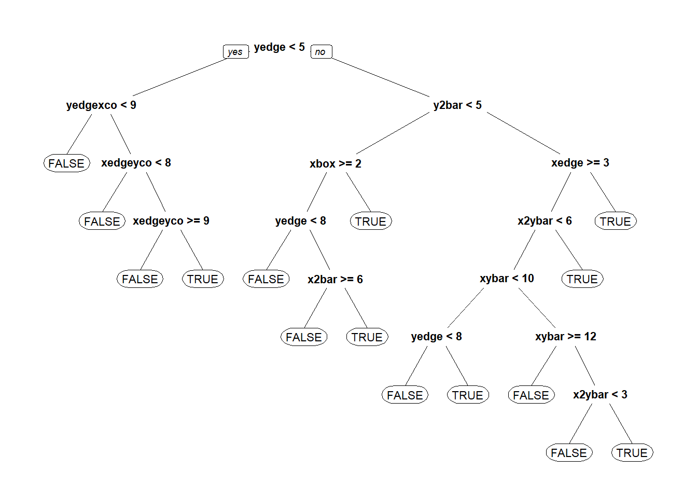
predictCART <- predict(CARTb, newdata = lettersTest, type = "class")
table(lettersTest$isB, predictCART) #Confusion matrix## predictCART
## FALSE TRUE
## FALSE 1118 57
## TRUE 43 340## [1] 0.9358151#1.3 - Random Forest accuracy
library(randomForest)
set.seed(1000)
lettersForest <- randomForest(isB ~ . - letter, data=lettersTrain)
predictForest <- predict(lettersForest, newdata = lettersTest)# prediction using random forest
table(lettersTest$isB, predictForest) # confusion Matrix## predictForest
## FALSE TRUE
## FALSE 1163 12
## TRUE 9 374## [1] 0.98652125.4.2.2 Problem 2 - Predicting the letters A, B, P, R
letters$letter <- as.factor(letters$letter)
set.seed(2000)
spl <- sample.split(letters$letter, SplitRatio = 0.5)
lettersTrain <- subset(letters, spl == TRUE)
lettersTest <- subset(letters, spl == FALSE)
#2.1 - What is the baseline accuracy?
table(lettersTest$letter)##
## A B P R
## 395 383 401 379## [1] 0.2573813#2.2 What is the test set accuracy of CART model?
CARTb = rpart(letter ~ . - isB, data=lettersTrain, method="class")
prp(CARTb)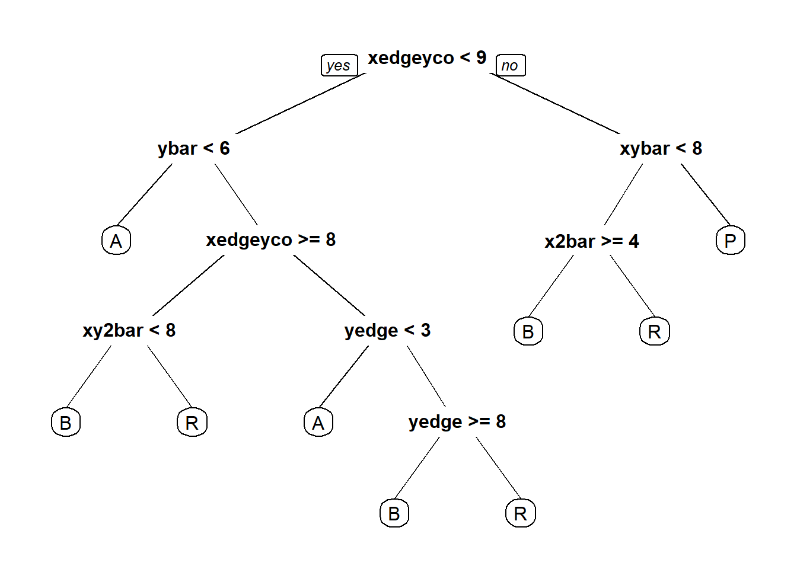
predictCART <- predict(CARTb, newdata = lettersTest, type = "class")
table(lettersTest$letter, predictCART)## predictCART
## A B P R
## A 348 4 0 43
## B 8 318 12 45
## P 2 21 363 15
## R 10 24 5 340## [1] 0.8786906#2.3 - Random Forest
library(randomForest)
set.seed(1000)
lettersForest <- randomForest(letter ~ . - isB, data=lettersTrain)
predictForest <- predict(lettersForest, newdata = lettersTest)# prediction using random forest
table(lettersTest$letter, predictForest) # confusion Matrix## predictForest
## A B P R
## A 391 0 3 1
## B 0 380 1 2
## P 0 6 394 1
## R 3 14 0 362## [1] 0.98010275.4.3 Part 3 - Predicting Earnings from Census Data
5.4.3.1 Problem 1 - A Logistic Regression Model
census <- read.csv("week4/census.csv")
set.seed(2000)
spl <- sample.split(census$over50k, SplitRatio = 0.6)
censusTrain <- subset(census, spl == TRUE)
censusTest <- subset(census, spl == FALSE)
#1.1 - build a logistic regression model to predict the dependent variable "over50k", using all of the other variables in the dataset
logCensusModel <- glm(over50k ~ ., data= censusTrain, family="binomial")## Warning: glm.fit: fitted probabilities numerically 0 or 1 occurred##
## Call:
## glm(formula = over50k ~ ., family = "binomial", data = censusTrain)
##
## Deviance Residuals:
## Min 1Q Median 3Q Max
## -5.1065 -0.5037 -0.1804 -0.0008 3.3383
##
## Coefficients: (1 not defined because of singularities)
## Estimate Std. Error z value Pr(>|z|)
...#1.2 - Model accuracy
logPrediction <- predict(logCensusModel, newdata = censusTest, type="response")## Warning in predict.lm(object, newdata, se.fit, scale = 1, type = if (type == :
## prediction from a rank-deficient fit may be misleading## Min. 1st Qu. Median Mean 3rd Qu. Max.
## 0.00000 0.01388 0.10074 0.24115 0.39293 1.00000##
## FALSE TRUE
## <=50K 9051 662
## >50K 1190 1888## [1] 0.8552107##
## <=50K >50K
## 9713 3078## [1] 0.75936215.4.3.2 Problem 2 - A CART model
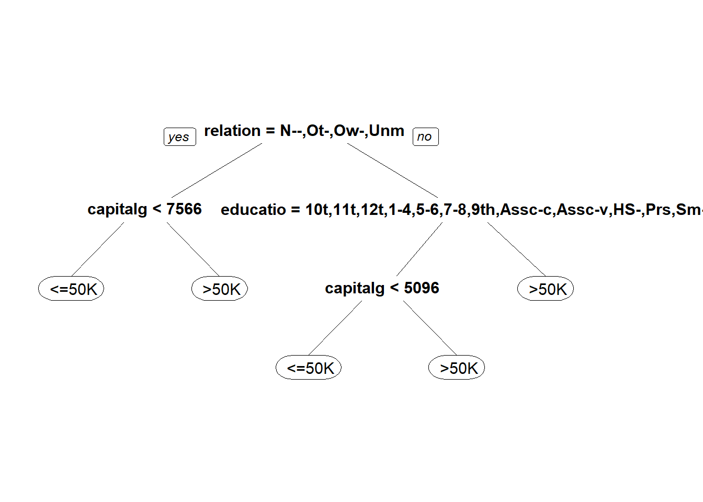
#2.4
#Classification Tree
predictCART <- predict(censusTree, newdata = censusTest, type = "class")
summary(predictCART)## <=50K >50K
## 10725 2066## predictCART
## <=50K >50K
## <=50K 9243 470
## >50K 1482 1596## [1] 0.8473927#Regresion tree with threshold 0.5
predictCART2 <- predict(censusTree, newdata = censusTest)
summary(predictCART2)## <=50K >50K
## Min. :0.01286 Min. :0.05099
## 1st Qu.:0.69728 1st Qu.:0.05099
## Median :0.94901 Median :0.05099
## Mean :0.75905 Mean :0.24095
## 3rd Qu.:0.94901 3rd Qu.:0.30272
## Max. :0.94901 Max. :0.98714## <=50K >50K
## 2 0.2794982 0.72050176
## 5 0.2794982 0.72050176
## 7 0.9490143 0.05098572
## 8 0.6972807 0.30271934
## 11 0.6972807 0.30271934
## 12 0.2794982 0.72050176##
## FALSE TRUE
## <=50K 9243 470
## >50K 1482 1596#2.6 AUC
ROCRpred = prediction(predictCART2[,2], censusTest$over50k)
as.numeric(performance(ROCRpred, "auc")@y.values)## [1] 0.84702565.4.3.3 Problem 3 - A random forest model
#3.1 - model accuracy
set.seed(1)
trainSmall = censusTrain[sample(nrow(censusTrain), 2000), ]
set.seed(1)
smallCensusForest <- randomForest(over50k ~ . , data=trainSmall)
predictForest <- predict(smallCensusForest, newdata = censusTest)# prediction using random forest
table(censusTest$over50k, predictForest) # confusion Matrix## predictForest
## <=50K >50K
## <=50K 8955 758
## >50K 1125 1953## [1] 0.8480963#3.2 - Forest metrics
vu = varUsed(smallCensusForest, count=TRUE)
vusorted = sort(vu, decreasing = FALSE, index.return = TRUE)
dotchart(vusorted$x, names(smallCensusForest$forest$xlevels[vusorted$ix])) # Chart of variables and number of splits selected in all forest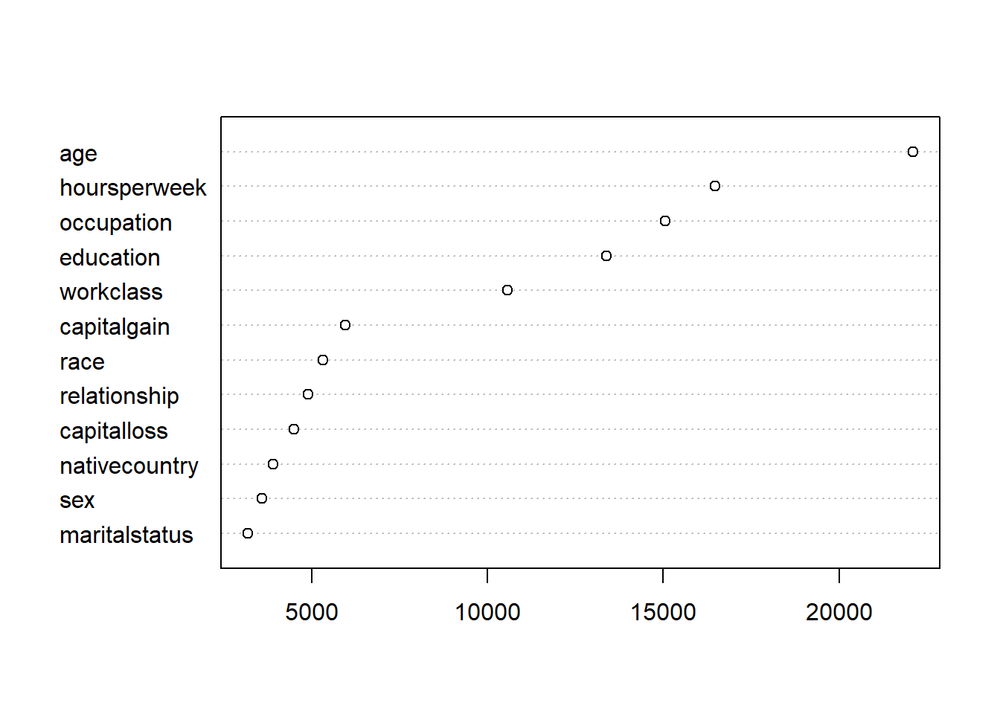
## Length Class Mode
## call 3 -none- call
## type 1 -none- character
## predicted 2000 factor numeric
## err.rate 1500 -none- numeric
## confusion 6 -none- numeric
## votes 4000 matrix numeric
## oob.times 2000 -none- numeric
## classes 2 -none- character
## importance 12 -none- numeric
...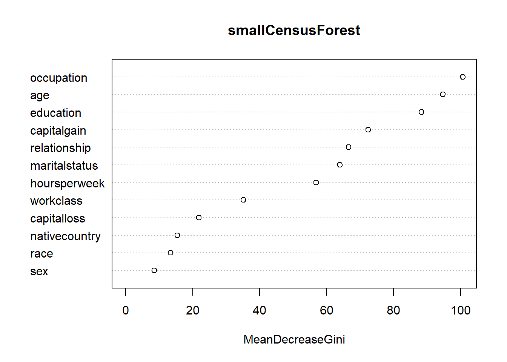
5.4.3.4 Problem 4 - Cross validation
library(e1071)
library(caret)
set.seed(2)
#4.1 - Which value of cp does the train function recommend?
censusTrainControl <-trainControl(method = "cv", number=10) # k = 10 folds
cartGrid = expand.grid( .cp = seq(0.002,0.1,0.002))
trained <- train(over50k ~ . , data = censusTrain, method = "rpart", trControl = censusTrainControl, tuneGrid = cartGrid)
trained## CART
##
## 19187 samples
## 12 predictor
## 2 classes: ' <=50K', ' >50K'
##
## No pre-processing
## Resampling: Cross-Validated (10 fold)
## Summary of sample sizes: 17268, 17269, 17269, 17268, 17268, 17268, ...
## Resampling results across tuning parameters:
...#4.2 - Fit a CART model to the training data using this value of cp. What is the prediction accuracy on the test set?
censusTree <- rpart(over50k ~ ., data= censusTrain, method = "class", cp=0.002) #new tree with cp
prp(censusTree)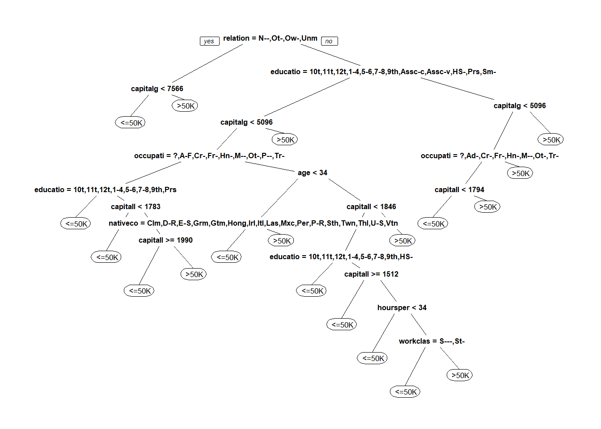
cpCensusPrediction <- predict(censusTree, newdata = censusTest, type="class")
table(censusTest$over50k, cpCensusPrediction)## cpCensusPrediction
## <=50K >50K
## <=50K 9178 535
## >50K 1240 1838## [1] 0.8612306